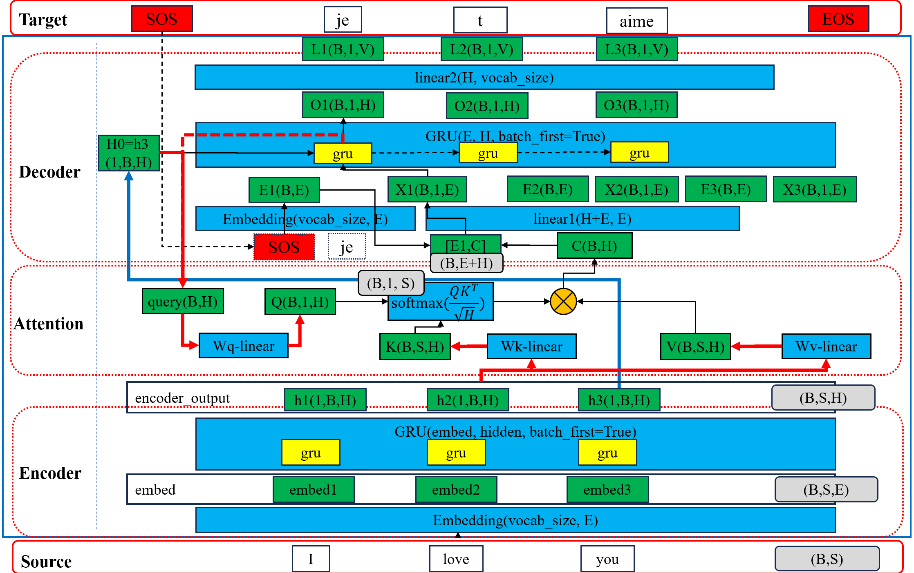
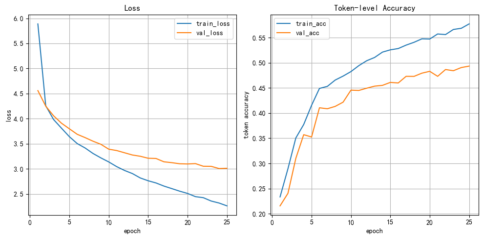

首页 / 课程讲义 / 第 42 讲
🔁 RNN Seq2Seq 机器翻译实战
Python
import torch import matplotlib.pyplot as plt # 设置中文字体 plt.rcParams['font.sans-serif'] = ['SimHei'] # 微软雅黑 plt.rcParams['axes.unicode_minus'] = False # 解决负号显示问题 # 设置设备，优先使用顺序：GPU > MPS > CPU DEVICE = torch.device( "cuda" if torch.cuda.is_available() else "mps" if torch.backends.mps.is_available() else "cpu" ) print(f"当前设备：{DEVICE}")
1.1 学习目标
- 了解 英译法的数据集
- 掌握 构建词表的方法
- 掌握 数据处理中的 截断填充方法
- 掌握 构建 基于 GRU+Attention 的EncoderDecoder模型
- 掌握 训练 基于 GRU+Attention 的EncoderDecoder模型
2 案例描述
使用 Encoder–Decoder（GRU）+ Attention 架构，实现一个端到端的 英文 → 法文 机器翻译系统，覆盖完整 NLP 工程流程。
3 获取数据
.\data\eng-fra-v2.txt
Python
""" i am from brazil . je viens du bresil . i am from france . je viens de france . i am from russia . je viens de russie . i am frying fish . je fais frire du poisson . i am not kidding . je ne blague pas . i am on duty now . maintenant je suis en service . i am on duty now . je suis actuellement en service . i am only joking . je ne fais que blaguer . i am out of time . je suis a court de temps . i am out of work . je suis au chomage . i am out of work . je suis sans travail . i am paid weekly . je suis payee a la semaine . i am pretty sure . je suis relativement sur . i am truly sorry . je suis vraiment desole . i am truly sorry . je suis vraiment desolee . """
'\ni am from brazil . je viens du bresil .\ni am from france . je viens de france .\ni am from russia . je viens de russie .\ni am frying fish . je fais frire du poisson .\ni am not kidding . je ne blague pas .\ni am on duty now . maintenant je suis en service .\ni am on duty now . je suis actuellement en service .\ni am only joking . je ne fais que blaguer .\ni am out of time . je suis a court de temps .\ni am out of work . je suis au chomage .\ni am out of work . je suis sans travail .\ni am paid weekly . je suis payee a la semaine .\ni am pretty sure . je suis relativement sur .\ni am truly sorry . je suis vraiment desole .\ni am truly sorry . je suis vraiment desolee .\n\n'
4 数据预处理
| 步骤 | 内容 | 说明 |
|---|---|---|
| 1. 文本清洗 | • 转小写 • 去除无效字符 • 保留基本标点 . ! ? |
目的：降低词表规模，减少噪声 |
| 2. 特殊符号（必须） | <PAD> : 句子补齐，不参与训练<SOS> : 解码起始符<EOS> : 解码终止符 |
注意： • <PAD> 只用于对齐长度• <SOS>/<EOS> 决定 Seq2Seq 是否能正确工作 |
| 3. Padding 与截断 | [SOS] w1 w2 ... wN [EOS] [PAD] [PAD] |
• 所有序列统一到 MAX_LENGTH• <PAD> 在损失和准确率中 必须忽略 |
5 模型结构
模型三部分： 1. Encoder：GRU，读入source英文句子，输出隐藏状态序列 2. Attention：计算对齐权重，加权求和 Encoder 输出 3. Decoder：逐词生成target法文句子
基于 GRU+Attention 的 Encoder-Decoder 架构为：

实现过程
- 0. 数据清洗：去掉无效字符
- 1. 构建词表：构建两个词表，输入词表
vocab_source，输出词表vocab_target - 2. 准备数据集
- 按比例 (0.9/0.05/0.05) 拆分数据集为 train/val/test
- 张量 → 自定义的数据集对象 → 数据加载器
- 需要截断填充输入序列
source和输出序列target到固定长度MAX_LENGTH
- 3. 搭建神经网络
- 基于 GRU 带有 Attention 的 Encoder-Decoder 结构
- 编码器
MyEncoder、解码器MyDecoder、注意力机制MyAttention、整体模型MyEncoderDecoder
- 4. 模型训练
- 在训练集上训练，在验证集上验证，验证时用自回归 (teacher forcing=0) 来接近真实推理/预测场景
- 准确率
accuracy为 token 级别的准确率，忽略<PAD>的影响 - 注意：实际工程中，机器翻译的评价指标通常使用 BLEU 分数，更能反映翻译质量。后面的项目会使用 BLEU 进行评价
- 5. 模型测试：在测试集上测试，测试时用自回归 (teacher forcing=0) 来接近真实推理/预测场景
- 6. 模型预测：输入一个英文句子，输出翻译的法语句子
6 训练关键技术
6.1 Teacher Forcing
训练时，下一步输入是否使用“真实目标词”，还是使用上一步的预测结果。
| 场景 | 下一步输入 |
|---|---|
| 训练（概率 p） | 真实目标词 |
| 训练（1-p） | 模型预测词 |
| 验证 / 测试 / 预测 | 模型预测词 |
6.2 损失函数（重要）
Python
CrossEntropyLoss(ignore_index=pad_idx)
<PAD>不参与损失计算- loss 是 非 PAD token 的平均损失
6.3 准确率定义（说明清楚）
Text
Token-level Accuracy（忽略 PAD）
⚠️ 注意：
- token accuracy ≠ 翻译质量
- 真实翻译评估通常使用 BLEU
6.4 推理（预测）流程
- Encoder 编码整句
- Decoder 从
<SOS>开始 - 自回归生成
- 遇到
<EOS>停止
7 RNN英译法案例
Python
""" 演示: RNN英译法案例，基于 GRU+Attention 的EncoderDecoder模型，实现英译法任务，属于seq2seq的经典应用案例。 案例的工作流： 0.数据清洗 去掉无效字符 1.构建词表 构建两个词表，输入词表vocab_source，输出词表vocab_target 2.准备数据集 1.按比例(0.9/0.05/0.05)拆分数据集为 train/val/test 2.张量 -> 自定义的数据集对象 -> 数据加载器 3.需要截断填充 输入序列source 和 输出序列target 到 固定长度MAX_LENGTH 3.搭建神经网络 基于GRU带有Attention的Encoder-Decoder结构 编码器MyEncoder, 解码器MyDecoder, 注意力机制MyAttention, 整体模型MyEncoderDecoder 4.模型训练 在训练集上训练，在验证集上验证，验证时用自回归(teacher forcing=0)来接近真实推理/预测场景 准确率accuracy为token级别的准确率,忽略<PAD>的影响， 注意：实际工程中，机器翻译的评价指标通常使用BLEU分数，更能反映翻译质量。后面的项目会使用BLEU进行评价。 5.模型测试 在测试集上测试，测试时用自回归(teacher forcing=0)来接近真实推理/预测场景 6.模型预测 输入一个英文句子，输出翻译的法语句子 关键点说明： 1.输入序列source和输出序列target都要截断填充到最大长度MAX_LENGTH,注意每个句子首尾添加<SOS>,<EOS>,填充用<PAD> 2.词表包含特殊符号 <PAD>,<SOS>,<EOS>，并且<PAD>在 embedding中 padding_idx = 0 3.关于teacher forcing, 训练时使用teacher forcing(TEACHER_FORCING_RATIO=0.5),验证/测试时自回归(TEACHER_FORCING_RATIO=0) 4.损失与准确率均在 token 级别上计算，忽略 <PAD>; 机器翻译的评价指标通常使用BLEU分数 """ # 导包 import os # 文件操作 import re # 用于正则表达式 import time import numpy as np # 用于构建网络结构和函数的torch工具包 import torch import torch.nn as nn import torch.nn.functional as F from torch.utils.data import Dataset, DataLoader import torch.optim as optim # 用于随机生成数据 import random import matplotlib.pyplot as plt from sklearn.model_selection import train_test_split # 用于拆分数据集 from tqdm import tqdm # 设置中文字体 plt.rcParams['font.sans-serif'] = ['SimHei'] plt.rcParams['axes.unicode_minus'] = False # 0.配置与常量 # 设置设备 DEVICE = torch.device("cuda" if torch.cuda.is_available() else "cpu") print(f"device: {DEVICE}") # 特殊token SPECIAL_TOKENS = ['<PAD>', '<SOS>', '<EOS>'] # 文件路径 DATA_PATH = "./data/eng-fra-v2.txt" MODEL_DIR = "./model/" os.makedirs(MODEL_DIR, exist_ok=True) MODEL_FILE = os.path.join(MODEL_DIR, "my_rnn.pth") IMG_DIR = "./image/" os.makedirs(IMG_DIR, exist_ok=True) IMG_FILE = os.path.join(IMG_DIR, "train_loss02.png") # 超参数 MAX_LENGTH = 12 # 句子最大长度 BATCH_SIZE = 128 # 批量大小 EMBED_SIZE = 512 # 词向量维度 HIDDEN_SIZE = 512 # 隐藏状态维度 EPOCHS = 25 # 训练轮数 LR = 1e-4 TEACHER_FORCING_RATIO = 0.5 # teacher forcing 比例,训练时使用真实值来预测下一个词的比例 # 0.数据清洗，去掉无效字符 def clean_text(string): # 转换为小写,去除首尾的空白字符 string = string.strip().lower() # 在标点.!?前后添加空格，使用正则表达式来实现 string = re.sub(r"([.!?])", r" \1 ", string) # 把 特殊符号(非大小写字母 和 标点.!?) 替换为空格 string = re.sub(r"[^a-zA-Z.!?]+", r" ", string) return string.strip() # 1.构建词表，source词表和target词表 def build_vocab(file_path=DATA_PATH): # 1.读取文本文件 with open(file_path, "r", encoding="utf-8") as f: lines = f.readlines() # 按照\t进行切分，获取source和target的句子对 pairs = [line.strip().split("\t") for line in lines] # 2.数据清洗 pairs = [(clean_text(source), clean_text(target)) for source, target in pairs] # 对pairs进行去重 new_pairs = [] for pair in pairs: if pair not in new_pairs: new_pairs.append(pair) pairs = new_pairs # print(f"句子对的数量：{len(pairs)}") # 获取source和target的字符串最大长度 max_source_length = max([len(source.split()) for source, _ in pairs]) max_target_length = max([len(target.split()) for _, target in pairs]) print(f"句子对中最长的source长度：{max_source_length}") print(f"句子对中最长的target长度：{max_target_length}") # 3.构建词表，source词表，target词表 # 3.1 初始化词表 vocab_source = {token: index for index, token in enumerate(SPECIAL_TOKENS)} vocab_target = {token: index for index, token in enumerate(SPECIAL_TOKENS)} # 3.2 遍历句子对，添加到词表 for source, target in pairs: # 3.3 遍历source, 添加到词表vocab_source for token in source.split(): if token not in vocab_source: vocab_source[token] = len(vocab_source) # 3.4 遍历target, 添加到词表vocab_target for token in target.split(): if token not in vocab_target: vocab_target[token] = len(vocab_target) # 4.构建反向词表，{index: token} rev_src_vocab = {index: token for token, index in vocab_source.items()} rev_tgt_vocab = {index: token for token, index in vocab_target.items()} # 返回结果 return vocab_source, rev_src_vocab, vocab_target, rev_tgt_vocab, pairs # 2.准备数据集 # 2.1 拆分数据集为 train/val/test def split_pairs(pairs, train_ratio=0.8, val_ratio=0.1): # 拆分数据集pairs为 训练集 和 验证集+测试集 train_pairs, val_test_pairs = train_test_split(pairs, train_size=train_ratio, random_state=123) # 拆分val_test_pairs为 验证集和测试集 val_pairs, test_pairs = train_test_split(val_test_pairs, train_size=val_ratio/(1-train_ratio), random_state=123) return train_pairs, val_pairs, test_pairs # 2.2 构建数据集对象 class MyDataset(Dataset): """ 输出固定长度的source 和 target 序列 """ # 1.初始化方法 def __init__(self, pairs, vocab_source, vocab_target, max_length=MAX_LENGTH): self.pairs = pairs self.vocab_source = vocab_source self.vocab_target = vocab_target self.max_length = max_length self.num_samples = len(pairs) # 2.重写len方法，返回数据集大小 def __len__(self): return self.num_samples # 3.重写getitem方法，返回指定索引的输入输出 def __getitem__(self, index): # 1.修正index, 防止越界 index = index % self.num_samples # 2.获取对应的句子对 source, target = self.pairs[index] # 3.将句子转换为索引序列 index_source = [self.vocab_source.get(token, self.vocab_source.get('<PAD>', 0)) for token in source.split()] index_target = [self.vocab_target.get(token, self.vocab_target.get('<PAD>', 0)) for token in target.split()] # 4.截断填充到固定长度self.max_length index_source = self.pad_sequence(index_source, self.vocab_source) index_target = self.pad_sequence(index_target, self.vocab_target) return index_source, index_target # 4.定义pad_sequence方法，填充序列到固定长度 def pad_sequence(self, sequence, vocab): # 1.截断到self.max_length-2 sequence = sequence[:self.max_length-2] # 2.添加开始结束标记 sequence = [vocab['<SOS>']] + sequence + [vocab['<EOS>']] # 3.填充到固定长度self.max_length, 使用填充符 <PAD> pad_length = self.max_length - len(sequence) sequence = sequence + [vocab.get('<PAD>', 0)] * pad_length # 返回整型索引张量 return torch.tensor(sequence, dtype=torch.int64) # 3.搭建神经网络，GRU+Attention的EncoderDecoder模型 # 3.1 构建Encoder class MyEncoder(nn.Module): """ 输入： source：(batch_size,seq_len) hidden: (1,batch_size,hidden_size) 输出： output：(batch_size,seq_len,hidden_size) hidden: (1,batch_size,hidden_size) """ # 1.初始化方法 def __init__(self, embed_size, hidden_size, vocab_source): # 初始化父类成员 super().__init__() # 初始化参数 self.vocab_size = len(vocab_source) self.embed_size = embed_size self.hidden_size = hidden_size self.vocab_source = vocab_source # 词嵌入层 # 参数1：词表大小；参数2：词向量维度 self.embed = nn.Embedding( self.vocab_size, self.embed_size, padding_idx=self.vocab_source.get('<PAD>', 0) ) # GRU层 # 参数1：输入维度，词向量维度 # 参数2：隐藏状态维度 # 参数3：是否把batch放到0轴 # 如果batch_first=True，则输入和输出为： # 词向量(batch_size, seq_len, embed_size)-> 所有时间步的隐藏状态output:(batch_size, seq_len, hidden_size) # 但是当前时间步的隐藏状态依然为(1,batch_size,hidden_size) self.gru = nn.GRU(self.embed_size, self.hidden_size, batch_first=True) # 2.forward方法 def forward(self, source, hidden=None): # source: (batch_size, seq_len) # 输入词嵌入层 embed = self.embed(source) # (batch_size, seq_len, embed_size), (64,12,128) # 输入GRU层 # output: (batch_size, seq_len, hidden_size) # hidden: (1, batch_size, hidden_size) output, hidden = self.gru(embed, hidden) return output, hidden # 3.2 构建Attention class MyAttention(nn.Module): """ 输入： encoder_output: (batch_size,seq_len,hidden_size) decoder_hidden: (1,batch_size,hidden) 输出： context: (batch_size,hidden_size) attention_weights: (batch_size,seq_len) """ # 1.初始化方法 def __init__(self, hidden_size): # 初始化父类成员 super().__init__() # 初始化参数 self.hidden_size = hidden_size # 初始化Q,K,V的线性层 self.linear_q = nn.Linear(self.hidden_size, self.hidden_size) self.linear_k = nn.Linear(self.hidden_size, self.hidden_size) self.linear_v = nn.Linear(self.hidden_size, self.hidden_size) # 2.forward方法 def forward(self, encoder_output, decoder_hidden, src_pad_mask=None): # 0.获取解码器最外层的隐藏状态，(num_layers,B,H) -> (B,H) query = decoder_hidden[-1] # (batch_size,hidden_size) # 1.计算QKV Q = self.linear_q(query).unsqueeze(1) # (batch_size,1,hidden_size) K = self.linear_k(encoder_output) # (batch_size,seq_len,hidden_size) V = self.linear_v(encoder_output) # (batch_size,seq_len,hidden_size) # 2.计算缩放点积注意力分数，Q*K^T/sqrt(H) scores = torch.bmm(Q, K.permute(0,2,1)) / (self.hidden_size**0.5) # (batch_size,1,seq_len) # mask 掉 PAD if src_pad_mask is not None: scores = scores.masked_fill(src_pad_mask.unsqueeze(1), -1e9) # 3.经过softmax转为概率分布，注意力权重 attention_weights = F.softmax(scores, dim=-1) # (batch_size,1,seq_len) # 4.计算加权求和，得到中间语义表示/上下文表示 context = torch.bmm(attention_weights, V) # (batch_size,1,hidden_size) # 返回结果（只压掉时间步维度，保留batch维度） return context.squeeze(dim=1), attention_weights.squeeze(dim=1) # 3.3 构建Decoder class MyDecoder(nn.Module): """ 输入： target: (batch_size,1) last_hidden: (1,batch_size,hidden_size) context: (batch_size,hidden_size) 输出： logits: (batch_size,vocab_size) hidden: (1,batch_size,hidden_size) """ # 1.初始化方法 def __init__(self, embed_size, hidden_size, vocab_target): # 初始化父类成员 super().__init__() # 初始化参数 self.vocab_target = vocab_target self.vocab_size = len(vocab_target) self.embed_size = embed_size self.hidden_size = hidden_size # 词嵌入层 self.embed = nn.Embedding(self.vocab_size, self.embed_size, padding_idx=self.vocab_target.get('<PAD>', 0)) # 从拼接张量到target中词的语义表示的线性层 self.linear1 = nn.Linear(self.hidden_size+self.embed_size, self.embed_size) # gru层 self.gru = nn.GRU(self.embed_size, self.hidden_size, batch_first=True) # 输出层，映射到target词表大小 self.linear2 = nn.Linear(self.hidden_size, self.vocab_size) # 2.forward方法 def forward(self, target, last_hidden, context): # target: (batch_size, 1) # 1.通过embed层 embed = self.embed(target) # (batch_size, 1, embed_size) embed = embed.squeeze(dim=1) # (batch_size, embed_size) # 2.拼接词向量 与 上下文表示 x = torch.cat([embed, context], dim=-1) # (batch_size, hidden_size+embed_size) # 3.输入linear1 x = self.linear1(x) # (batch_size, embed_size) x = x.unsqueeze(1) # (batch_size, 1, embed_size) # 4.输入到gru层 # output: (batch_size, 1, hidden_size) # hidden: (1, batch_size, hidden_size) output, hidden = self.gru(x, last_hidden) # 5.输入linear2 logits = self.linear2(output.squeeze(dim=1)) # (batch_size, vocab_size) return logits, hidden # 3.4 构建整体的EncoderDecoder模型 class MyEncoderDecoder(nn.Module): # 1.初始化方法 def __init__(self, vocab_source, vocab_target, embed_size, hidden_size): # 初始化父类成员 super().__init__() # 初始化参数 self.vocab_source = vocab_source self.vocab_target = vocab_target self.embed_size = embed_size self.hidden_size = hidden_size # 编码器 self.encoder = MyEncoder(self.embed_size, self.hidden_size, self.vocab_source) # 注意力层 self.attention = MyAttention(self.hidden_size) # 解码器 self.decoder = MyDecoder(self.embed_size, self.hidden_size, self.vocab_target) # 2.forward方法 def forward(self, source, target=None, teacher_forcing_ratio=TEACHER_FORCING_RATIO): # 0.预测/推理分支:target为None时，自回归解码，禁用teacher forcing,采用预测值循环预测下一个词 if target is None: batch_size, seq_len = source.shape encoder_output, encoder_hidden = self.encoder(source) # source: (B, S) src_pad_mask = (source == self.vocab_source.get('<PAD>', 0)).to(DEVICE) # (B, S) # 3.初始化decoder_hidden decoder_hidden = encoder_hidden # (1,batch_size,hidden_size) # 初始化decoder_input,第一个输入为<SOS>的索引 decoder_input = torch.full(size=(batch_size, 1), fill_value=self.vocab_target.get('<SOS>', 1), dtype=torch.int64) decoder_input = decoder_input.to(DEVICE) # 记录所有的预测分数logits all_logits = [] # 记录最终预测结果 all_tokens = [] for i in range(MAX_LENGTH-1): # 4.传入 attention context, attention_weights = self.attention( encoder_output=encoder_output, decoder_hidden=decoder_hidden, src_pad_mask=src_pad_mask ) # 5.传入 decoder logits, decoder_hidden = self.decoder(decoder_input, decoder_hidden, context) # 6.获取当前时间步的预测结果 all_logits.append(logits) # (batch_size,vocab_size) y_pred = logits.argmax(dim=-1) # (batch_size) all_tokens.append(y_pred) # 7.使用当前预测结果y_pred作为下一时间步的输入 decoder_input = y_pred.unsqueeze(1) # (batch_size,1) # 8.检查是否出现了<EOS>，如果出现则跳出循环 if (y_pred==self.vocab_target.get('<EOS>', 2)).all(): break # 拼接预测结果为张量 all_tokens = torch.stack(all_tokens, dim=1) # (batch_size,seq_len_this) all_logits = torch.stack(all_logits, dim=1) # (batch_size,seq_len_this,vocab_size) # 返回预测结果, logits:(batch_size,seq_len_this,vocab_size), tokens: (batch_size,seq_len_this) return {"logits": all_logits, "tokens": all_tokens} # 1.训练分支：target不为None时，teacher forcing,采用概率随机使用真实值循环预测下一个词 batch_size, seq_len = source.shape # 2.通过encoder """ 输入： source：(batch_size,seq_len) hidden: (1,batch_size,hidden_size) 输出： output：(batch_size,seq_len,hidden_size) hidden: (1,batch_size,hidden_size) """ encoder_output, encoder_hidden = self.encoder(source) # source: (B, S) src_pad_mask = (source == self.vocab_source.get('<PAD>', 0)).to(DEVICE) # (B, S) # 3.初始化decoder_hidden decoder_hidden = encoder_hidden # (1,batch_size,hidden_size) # 初始化decoder_input,第一个输入为<SOS>的索引 decoder_input = torch.full(size=(batch_size,1),fill_value=self.vocab_target.get('<SOS>',1),dtype=torch.int64) decoder_input = decoder_input.to(DEVICE) # 初始化所有的预测结果all_logits, (batch,seq_len,vocab_size) all_logits = torch.zeros(batch_size, seq_len, len(self.vocab_target)) all_logits = all_logits.to(DEVICE) for i in range(1,seq_len): # 4.传入 attention """ 输入： encoder_output: (batch_size,seq_len,hidden_size) decoder_hidden: (1,batch_size,hidden) 输出： context: (batch_size,hidden_size) attention_weights: (batch_size,seq_len) """ context, attention_weights = self.attention( encoder_output=encoder_output, decoder_hidden=decoder_hidden, src_pad_mask=src_pad_mask ) # 5.传入 decoder """ 输入： target: (batch_size,1) last_hidden: (1,batch_size,hidden_size) context: (batch_size,hidden_size) 输出： logits: (batch_size,vocab_size) hidden: (1,batch_size,hidden_size) """ logits, decoder_hidden = self.decoder(decoder_input, decoder_hidden, context) all_logits[:,i,:] = logits # 6.判断是否使用teacher forcing, 使用概率teacher_forcing_ratio随机使用真实值 if random.random() < teacher_forcing_ratio: decoder_input = target[:,i].unsqueeze(1) # (batch_size,1) else: decoder_input = logits.argmax(dim=-1).unsqueeze(1) # (batch_size,1) # 返回预测结果logits, (batch_size,seq_len,vocab_size) return {"logits": all_logits} # 4.模型训练 # 4.1 训练一个轮次 def train_one_epoch(model, train_loader, loss_fn, optimizer): """ 训练一个epoch, 返回 (avg_loss, token_acc) token_acc 不考虑PAD,从第2个词开始，也就是对比all_logits[:,1:,:], target[:,1:] """ # 1.设置为训练模式 model.train() model.to(DEVICE) # 2.初始化总损失(按照token 级别计算)，总预测正确的数量(按照token 级别计算)，总有效token数量(按照token级别计算) total_loss = 0.0 total_correct = 0 total_tokens = 0 # 3.遍历数据加载器，分批训练 for x, y in tqdm(train_loader): # 1.迁移 数据 到设备 x = x.to(DEVICE) # (batch_size,seq_len) y = y.to(DEVICE) # (batch_size,seq_len) # 2.前向传播 y_output = model(x, y) # {"logits": all_logits} y_logits = y_output["logits"] # (batch_size,seq_len,vocab_size) # 忽略开始符<SOS> y_logits = y_logits[:,1:,:] y = y[:,1:] # 3.忽略填充符<PAD>,构造mask # 从 loss_fn 获取ignore_index，指定某个标签不参与计算损失，用于后续构造mask排除<PAD>的位置 pad_idx = getattr(loss_fn, "ignore_index", None) if pad_idx is None: pad_idx = SPECIAL_TOKENS.index("<PAD>") # 构造mask,也就是不是<PAD>的位置为True,<PAD>的位置为False mask = y != pad_idx # 记录总的有效的token数量 num_tokens = mask.sum().item() # 如果有效的token数量为0，则跳过当前批次 if num_tokens == 0: continue # 4.计算损失 # 转换y_logits为2D：(batch_size,seq_len,vocab_size) -> (-1,vocab_size) # y_logits_2d = y_logits.view(-1,y_logits.shape[-1]) y_logits_2d = y_logits.reshape(-1,y_logits.shape[-1]) # 转换y为1D：(batch_size,seq_len) -> (-1) # y_1d = y.view(-1) y_1d = y.reshape(-1) loss = loss_fn(y_logits_2d, y_1d) # 5.梯度清零 optimizer.zero_grad() # 6.反向传播 loss.backward() # 7.参数更新 optimizer.step() # 8.累计损失 total_loss += loss.item() * num_tokens # 9.计算预测正确的数量 # (batch_size,seq_len)&(batch_size,seq_len).sum() -> 0D total_correct += ((y_logits.argmax(dim=-1) == y)&mask).sum().item() total_tokens += num_tokens # 10.按照token 级别计算平均损失 和 准确率 avg_loss = total_loss / total_tokens token_acc = total_correct / total_tokens return avg_loss, token_acc # 4.2 模型评估 @torch.no_grad() # 关闭梯度计算 def evaluate(model, val_loader, loss_fn=nn.CrossEntropyLoss(ignore_index=0), teacher_forcing_ratio=0.0): """ 评估函数，返回(avg_loss, token_acc) token_acc 不考虑PAD,从第2个词开始，也就是对比all_logits[:,1:,:], target[:,1:] teacher_forcing_ratio=0.0，表示使用模型自回归预测下一个词，更接近真实预测场景 """ # 1.设置为评估模式 model.eval() model.to(DEVICE) # 2.初始化总损失(按照token 级别计算)，总预测正确的数量(按照token 级别计算)，总有效token数量(按照token级别计算) total_loss = 0.0 total_correct = 0 total_tokens = 0 # 3.遍历数据加载器，分批训练 for x, y in tqdm(val_loader): # 1.迁移 数据 到设备 x = x.to(DEVICE) # (batch_size,seq_len) y = y.to(DEVICE) # (batch_size,seq_len) # 2.前向传播 y_output = model(x, y, teacher_forcing_ratio=teacher_forcing_ratio) # {"logits": all_logits} y_logits = y_output["logits"] # (batch_size,seq_len,vocab_size) # 忽略开始符<SOS> y_logits = y_logits[:,1:,:] y = y[:, 1:] # 3.忽略填充符<PAD>,构造mask # 从 loss_fn 获取ignore_index，指定某个标签不参与计算损失，用于后续构造mask排除<PAD>的位置 pad_idx = getattr(loss_fn, "ignore_index", None) if pad_idx is None: pad_idx = SPECIAL_TOKENS.index("<PAD>") # 构造mask,也就是不是<PAD>的位置为True,<PAD>的位置为False mask = y != pad_idx # 记录总的有效的token数量 num_tokens = mask.sum().item() # 如果有效的token数量为0，则跳过当前批次 if num_tokens == 0: continue # 4.计算损失 # 转换y_logits为2D：(batch_size,seq_len,vocab_size) -> (-1,vocab_size) # y_logits_2d = y_logits.view(-1,y_logits.shape[-1]) y_logits_2d = y_logits.reshape(-1,y_logits.shape[-1]) # 转换y为1D：(batch_size,seq_len) -> (-1) # y_1d = y.view(-1) y_1d = y.reshape(-1) loss = loss_fn(y_logits_2d, y_1d) # # 5.梯度清零 # optimizer.zero_grad() # # 6.反向传播 # loss.backward() # # 7.参数更新 # optimizer.step() # 8.累计损失 total_loss += loss.item() * num_tokens # 9.计算预测正确的数量 # (batch_size,seq_len)&(batch_size,seq_len).sum() -> 0D total_correct += ((y_logits.argmax(dim=-1) == y)&mask).sum().item() total_tokens += num_tokens # 10.按照token 级别计算平均损失 和 准确率 avg_loss = total_loss / total_tokens token_acc = total_correct / total_tokens return avg_loss, token_acc # 主训练函数 def train(train_dataset, val_dataset, vocab_source, vocab_target, epochs=EPOCHS): """ 训练流程： - 每个epoch在训练集上训练，在验证集上验证 - 保存当前最小验证损失对应的模型 - 记录训练过程中每个epoch的损失和准确率，用于绘图 """ # 1.准备数据集 train_loader = DataLoader(train_dataset, batch_size=BATCH_SIZE, shuffle=True) val_loader = DataLoader(val_dataset, batch_size=BATCH_SIZE, shuffle=False) # 2.创建模型对象 model = MyEncoderDecoder(vocab_source, vocab_target, EMBED_SIZE, HIDDEN_SIZE) model = model.to(DEVICE) # 3.创建损失函数和优化器 loss_fn = nn.CrossEntropyLoss(ignore_index=vocab_target.get('<PAD>',0)) optimizer = optim.AdamW(model.parameters(), lr=LR, weight_decay=0.01) # 4.初始化训练指标，记录训练过程中每个epoch的损失和准确率 train_loss_list = [] train_acc_list = [] val_loss_list = [] val_acc_list = [] # 初始化当前最小验证损失 min_val_loss = float('inf') best_val_acc = 0.0 # 5.开始训练，遍历轮次 for epoch in range(epochs): start_time = time.time() # 6.在训练集上训练，得到训练损失、准确率，都是token级别的，也就是按照有效token数量计算的 train_loss, train_acc = train_one_epoch(model, train_loader, loss_fn, optimizer) # 7.在验证集上验证，得到验证损失、准确率，都是token级别的，也就是按照有效token数量计算的 val_loss, val_acc = evaluate(model, val_loader, loss_fn, teacher_forcing_ratio=0.0) # 8.记录 训练指标 train_loss_list.append(train_loss) train_acc_list.append(train_acc) val_loss_list.append(val_loss) val_acc_list.append(val_acc) epoch_time = time.time() - start_time print(f"epoch: {epoch+1}/{epochs} | " f"train_loss: {train_loss:.4f} | " f"train_acc: {train_acc:.4f} | " f"val_loss: {val_loss:.4f} | " f"val_acc: {val_acc:.4f} | " f"time: {epoch_time:.2f}s") # 9.按照最小验证损失保存模型 if val_loss < min_val_loss: # 更新最小验证损失 min_val_loss = val_loss best_val_acc = val_acc torch.save(model.state_dict(), MODEL_FILE) print(f"保存模型到 {MODEL_FILE}") pass # 10.打印最终模型评估结果 print(f"训练完成，最低验证损失: {min_val_loss:.4f}, 对应的验证准确率: {best_val_acc:.4f}") # 11.返回字典形式 return { "train_loss": train_loss_list, "train_acc": train_acc_list, "val_loss": val_loss_list, "val_acc": val_acc_list } # 绘图函数（损失与准确率曲线） def plot_history(history, out_path): """ 绘制训练/验证的 loss 与 accuracy 曲线（两幅子图） """ epochs = len(history["train_loss"]) # 总 epoch 数 x = list(range(1, epochs + 1)) # 横轴 plt.figure(figsize=(10, 5)) # 画布大小 # subplot 1: loss plt.subplot(1, 2, 1) # 左子图 plt.plot(x, history["train_loss"], label="train_loss") # 训练损失曲线 plt.plot(x, history["val_loss"], label="val_loss") # 验证损失曲线 plt.xlabel("epoch") # 横轴标题 plt.ylabel("loss") # 纵轴标题 plt.title("Loss") # 子图标题 plt.grid() plt.legend() # 图例 # subplot 2: accuracy plt.subplot(1, 2, 2) # 右子图 plt.plot(x, history["train_acc"], label="train_acc") # 训练准确率 plt.plot(x, history["val_acc"], label="val_acc") # 验证准确率 plt.xlabel("epoch") # 横轴标题 plt.ylabel("token accuracy") # 纵轴标题 plt.title("Token-level Accuracy") # 子图标题 plt.legend() # 图例 plt.grid() plt.tight_layout() # 紧凑布局 plt.savefig(out_path) # 保存图片 plt.show() print(f"Saved training curves to {out_path}") # 提示保存路径 # 6.模型预测 @torch.no_grad() def predict(text, model, vocab_source, rev_tgt_vocab): model.to(DEVICE) # 将text转换为index序列 index_seq = torch.tensor([vocab_source.get(token, 0) for token in text.split()]) # 添加0轴为批次维度 index_seq = index_seq.unsqueeze(0).to(DEVICE) # print(index_seq) # 前向传播，模型预测 output = model(index_seq) # 获取预测结果 y_tokens = output['tokens'] # (1, seq_len) y_sequence = [rev_tgt_vocab[index] for index in y_tokens.squeeze().tolist()] y_sequence = ' '.join(y_sequence) return y_sequence # 测试 if __name__ == "__main__": # 0.测试数据清洗 # string = " Hello, World!!!!!123 " # result = clean_text(string) # print(result) # 1.构建词表 vocab_source, rev_src_vocab, vocab_target, rev_tgt_vocab, pairs = build_vocab(DATA_PATH) print(f"vocab_source: {len(vocab_source)}") print(f"vocab_target: {len(vocab_target)}") print(f"rev_src_vocab: {len(rev_src_vocab)}") print(f"rev_tgt_vocab: {len(rev_tgt_vocab)}") print(f"pairs: {len(pairs)}") # 2.准备数据集 # 2.1 拆分数据集为 train/val/test train_pairs, val_pairs, test_pairs = split_pairs(pairs) print(f"train_pairs: {len(train_pairs)}") print(f"val_pairs: {len(val_pairs)}") print(f"test_pairs: {len(test_pairs)}") # 2.2 构建数据集对象 train_dataset = MyDataset(train_pairs, vocab_source, vocab_target) val_dataset = MyDataset(val_pairs, vocab_source, vocab_target) test_dataset = MyDataset(test_pairs, vocab_source, vocab_target) # for index in range(3): # print(train_dataset[index]) # 2.3 创建数据加载器对象 train_loader = DataLoader(train_dataset, batch_size=BATCH_SIZE, shuffle=True) # print(f"len(train_loader): {len(train_loader)}") # for source, target in train_loader: # print(f"source: {source.shape}") # print(f"target: {target.shape}") # break # 3.创建神经网络 model = MyEncoderDecoder(vocab_source, vocab_target, EMBED_SIZE, HIDDEN_SIZE) # 测试MyEncoder # encoder = MyEncoder(len(vocab_source), EMBED_SIZE, HIDDEN_SIZE) # print(encoder) # 测试MyAttention # attention = MyAttention(HIDDEN_SIZE) # print(attention) # 测试MyDecoder # decoder = MyDecoder(len(vocab_target), EMBED_SIZE, HIDDEN_SIZE) # print(decoder) # 4.模型训练 results = train(train_dataset, val_dataset, vocab_source, vocab_target) # 4.5 可视化训练过程 plot_history(results, IMG_FILE) # 5.模型测试 # 加载模型 if os.path.exists(MODEL_FILE): model.load_state_dict(torch.load(MODEL_FILE)) print(f"加载模型成功：{MODEL_FILE}") else: print(f"模型文件不存在：{MODEL_FILE}") test_loader = DataLoader(test_dataset, batch_size=BATCH_SIZE, shuffle=False) test_loss, test_acc = evaluate(model, test_loader, loss_fn=nn.CrossEntropyLoss(ignore_index=vocab_target.get('<PAD>',0)), teacher_forcing_ratio=0.0) print(f"测试集准确率: {test_acc:.4f} | 测试集损失: {test_loss:.4f}") # 6.模型预测 text = "i love you" y_sequence=predict(text, model, vocab_source, rev_tgt_vocab) print(f"输入: {text}") print(f"输出: {y_sequence}")
device: cuda
句子对中最长的source长度：9
句子对中最长的target长度：9
vocab_source: 2804
vocab_target: 4346
rev_src_vocab: 2804
rev_tgt_vocab: 4346
pairs: 10593
train_pairs: 8474
val_pairs: 1059
test_pairs: 1060
100%|██████████| 67/67 [00:02<00:00, 23.82it/s]
100%|██████████| 9/9 [00:00<00:00, 69.56it/s]
epoch: 1/25 | train_loss: 5.8887 | train_acc: 0.2335 | val_loss: 4.5594 | val_acc: 0.2157 | time: 2.95s
保存模型到 ./model/my_rnn.pth
100%|██████████| 67/67 [00:02<00:00, 26.06it/s]
100%|██████████| 9/9 [00:00<00:00, 61.18it/s]
epoch: 2/25 | train_loss: 4.2567 | train_acc: 0.2895 | val_loss: 4.2495 | val_acc: 0.2406 | time: 2.73s
保存模型到 ./model/my_rnn.pth
100%|██████████| 67/67 [00:02<00:00, 25.67it/s]
100%|██████████| 9/9 [00:00<00:00, 65.37it/s]
epoch: 3/25 | train_loss: 3.9813 | train_acc: 0.3506 | val_loss: 4.0561 | val_acc: 0.3100 | time: 2.75s
保存模型到 ./model/my_rnn.pth
100%|██████████| 67/67 [00:02<00:00, 26.36it/s]
100%|██████████| 9/9 [00:00<00:00, 63.46it/s]
epoch: 4/25 | train_loss: 3.8094 | train_acc: 0.3773 | val_loss: 3.9088 | val_acc: 0.3572 | time: 2.69s
保存模型到 ./model/my_rnn.pth
100%|██████████| 67/67 [00:02<00:00, 25.68it/s]
100%|██████████| 9/9 [00:00<00:00, 68.66it/s]
epoch: 5/25 | train_loss: 3.6406 | train_acc: 0.4155 | val_loss: 3.7978 | val_acc: 0.3526 | time: 2.75s
保存模型到 ./model/my_rnn.pth
100%|██████████| 67/67 [00:02<00:00, 25.53it/s]
100%|██████████| 9/9 [00:00<00:00, 67.27it/s]
epoch: 6/25 | train_loss: 3.5024 | train_acc: 0.4490 | val_loss: 3.6877 | val_acc: 0.4106 | time: 2.76s
保存模型到 ./model/my_rnn.pth
100%|██████████| 67/67 [00:02<00:00, 24.99it/s]
100%|██████████| 9/9 [00:00<00:00, 66.90it/s]
epoch: 7/25 | train_loss: 3.4149 | train_acc: 0.4531 | val_loss: 3.6219 | val_acc: 0.4086 | time: 2.82s
保存模型到 ./model/my_rnn.pth
100%|██████████| 67/67 [00:02<00:00, 25.72it/s]
100%|██████████| 9/9 [00:00<00:00, 63.00it/s]
epoch: 8/25 | train_loss: 3.3058 | train_acc: 0.4657 | val_loss: 3.5502 | val_acc: 0.4134 | time: 2.75s
保存模型到 ./model/my_rnn.pth
100%|██████████| 67/67 [00:02<00:00, 24.88it/s]
100%|██████████| 9/9 [00:00<00:00, 64.55it/s]
epoch: 9/25 | train_loss: 3.2175 | train_acc: 0.4735 | val_loss: 3.4884 | val_acc: 0.4217 | time: 2.84s
保存模型到 ./model/my_rnn.pth
100%|██████████| 67/67 [00:02<00:00, 25.04it/s]
100%|██████████| 9/9 [00:00<00:00, 63.88it/s]
epoch: 10/25 | train_loss: 3.1371 | train_acc: 0.4825 | val_loss: 3.3909 | val_acc: 0.4457 | time: 2.82s
保存模型到 ./model/my_rnn.pth
100%|██████████| 67/67 [00:02<00:00, 25.09it/s]
100%|██████████| 9/9 [00:00<00:00, 64.68it/s]
epoch: 11/25 | train_loss: 3.0440 | train_acc: 0.4944 | val_loss: 3.3643 | val_acc: 0.4451 | time: 2.82s
保存模型到 ./model/my_rnn.pth
100%|██████████| 67/67 [00:02<00:00, 24.75it/s]
100%|██████████| 9/9 [00:00<00:00, 63.46it/s]
epoch: 12/25 | train_loss: 2.9674 | train_acc: 0.5041 | val_loss: 3.3198 | val_acc: 0.4495 | time: 2.86s
保存模型到 ./model/my_rnn.pth
100%|██████████| 67/67 [00:02<00:00, 25.30it/s]
100%|██████████| 9/9 [00:00<00:00, 63.42it/s]
epoch: 13/25 | train_loss: 2.9052 | train_acc: 0.5106 | val_loss: 3.2752 | val_acc: 0.4536 | time: 2.80s
保存模型到 ./model/my_rnn.pth
100%|██████████| 67/67 [00:02<00:00, 24.88it/s]
100%|██████████| 9/9 [00:00<00:00, 66.33it/s]
epoch: 14/25 | train_loss: 2.8177 | train_acc: 0.5212 | val_loss: 3.2501 | val_acc: 0.4551 | time: 2.84s
保存模型到 ./model/my_rnn.pth
100%|██████████| 67/67 [00:02<00:00, 24.91it/s]
100%|██████████| 9/9 [00:00<00:00, 64.83it/s]
epoch: 15/25 | train_loss: 2.7617 | train_acc: 0.5257 | val_loss: 3.2106 | val_acc: 0.4610 | time: 2.84s
保存模型到 ./model/my_rnn.pth
100%|██████████| 67/67 [00:02<00:00, 25.22it/s]
100%|██████████| 9/9 [00:00<00:00, 63.44it/s]
epoch: 16/25 | train_loss: 2.7177 | train_acc: 0.5283 | val_loss: 3.2059 | val_acc: 0.4599 | time: 2.80s
保存模型到 ./model/my_rnn.pth
100%|██████████| 67/67 [00:02<00:00, 25.20it/s]
100%|██████████| 9/9 [00:00<00:00, 65.51it/s]
epoch: 17/25 | train_loss: 2.6559 | train_acc: 0.5351 | val_loss: 3.1399 | val_acc: 0.4731 | time: 2.80s
保存模型到 ./model/my_rnn.pth
100%|██████████| 67/67 [00:02<00:00, 25.07it/s]
100%|██████████| 9/9 [00:00<00:00, 62.02it/s]
epoch: 18/25 | train_loss: 2.6054 | train_acc: 0.5406 | val_loss: 3.1225 | val_acc: 0.4730 | time: 2.83s
保存模型到 ./model/my_rnn.pth
100%|██████████| 67/67 [00:02<00:00, 25.00it/s]
100%|██████████| 9/9 [00:00<00:00, 64.18it/s]
epoch: 19/25 | train_loss: 2.5540 | train_acc: 0.5476 | val_loss: 3.1005 | val_acc: 0.4794 | time: 2.83s
保存模型到 ./model/my_rnn.pth
100%|██████████| 67/67 [00:02<00:00, 24.98it/s]
100%|██████████| 9/9 [00:00<00:00, 64.95it/s]
epoch: 20/25 | train_loss: 2.5093 | train_acc: 0.5472 | val_loss: 3.0965 | val_acc: 0.4830 | time: 2.83s
保存模型到 ./model/my_rnn.pth
100%|██████████| 67/67 [00:02<00:00, 25.01it/s]
100%|██████████| 9/9 [00:00<00:00, 64.28it/s]
epoch: 21/25 | train_loss: 2.4451 | train_acc: 0.5572 | val_loss: 3.1038 | val_acc: 0.4731 | time: 2.83s
100%|██████████| 67/67 [00:02<00:00, 24.99it/s]
100%|██████████| 9/9 [00:00<00:00, 62.95it/s]
epoch: 22/25 | train_loss: 2.4244 | train_acc: 0.5560 | val_loss: 3.0509 | val_acc: 0.4866 | time: 2.83s
保存模型到 ./model/my_rnn.pth
100%|██████████| 67/67 [00:02<00:00, 24.83it/s]
100%|██████████| 9/9 [00:00<00:00, 63.31it/s]
epoch: 23/25 | train_loss: 2.3577 | train_acc: 0.5662 | val_loss: 3.0493 | val_acc: 0.4842 | time: 2.85s
保存模型到 ./model/my_rnn.pth
100%|██████████| 67/67 [00:02<00:00, 24.96it/s]
100%|██████████| 9/9 [00:00<00:00, 63.04it/s]
epoch: 24/25 | train_loss: 2.3178 | train_acc: 0.5685 | val_loss: 3.0049 | val_acc: 0.4905 | time: 2.83s
保存模型到 ./model/my_rnn.pth
100%|██████████| 67/67 [00:02<00:00, 24.88it/s]
100%|██████████| 9/9 [00:00<00:00, 62.23it/s]
epoch: 25/25 | train_loss: 2.2613 | train_acc: 0.5773 | val_loss: 3.0105 | val_acc: 0.4934 | time: 2.84s
训练完成，最低验证损失: 3.0049, 对应的验证准确率: 0.4905

Saved training curves to ./image/train_loss02.png
加载模型成功：./model/my_rnn.pth
100%|██████████| 9/9 [00:00<00:00, 61.50it/s]
测试集准确率: 0.4985 | 测试集损失: 2.9835
输入: i love you
输出: je ne vais je me ai ai ai ai ai .
Python
from collections import Counter import math def ids_to_words(token_ids, rev_vocab): """ 将 token id 序列转成词序列，遇到 <EOS>/<PAD> 停止。 """ words = [] for token_id in token_ids: token = rev_vocab.get(int(token_id), '<PAD>') if token in {'<EOS>', '<PAD>'}: break if token != '<SOS>': words.append(token) return words def compute_corpus_bleu(references, candidates, max_n=4): """ 简化版 corpus BLEU（单参考）。返回 0~100 分。 """ if not references or not candidates: return 0.0 clipped_counts = [0] * max_n total_counts = [0] * max_n ref_len = 0 cand_len = 0 for ref, cand in zip(references, candidates): ref_len += len(ref) cand_len += len(cand) for n in range(1, max_n + 1): if len(cand) < n: continue cand_ngrams = Counter(tuple(cand[i:i + n]) for i in range(len(cand) - n + 1)) ref_ngrams = Counter(tuple(ref[i:i + n]) for i in range(len(ref) - n + 1)) total_counts[n - 1] += sum(cand_ngrams.values()) clipped_counts[n - 1] += sum(min(v, ref_ngrams[k]) for k, v in cand_ngrams.items()) precisions = [] for clipped, total in zip(clipped_counts, total_counts): precisions.append((clipped / total) if total > 0 else 0.0) if cand_len == 0: return 0.0 # 平滑，避免高阶 n-gram 为 0 时 BLEU 直接为 0 precisions = [max(p, 1e-9) for p in precisions] bp = 1.0 if cand_len > ref_len else math.exp(1 - ref_len / cand_len) bleu = bp * math.exp(sum(math.log(p) for p in precisions) / max_n) return bleu * 100 @torch.no_grad() def evaluate_bleu(model, data_loader, rev_tgt_vocab): """ 测试阶段：自回归生成并计算 corpus BLEU。 """ model.eval() model.to(DEVICE) references = [] candidates = [] for x, y in tqdm(data_loader): x = x.to(DEVICE) output = model(x, None) # 自回归生成 pred_tokens = output['tokens'].cpu() true_tokens = y[:, 1:].cpu() # 去掉 <SOS> for pred_ids, true_ids in zip(pred_tokens, true_tokens): candidates.append(ids_to_words(pred_ids.tolist(), rev_tgt_vocab)) references.append(ids_to_words(true_ids.tolist(), rev_tgt_vocab)) return compute_corpus_bleu(references, candidates) test_bleu = evaluate_bleu(model, test_loader, rev_tgt_vocab) print(f"测试集 BLEU: {test_bleu:.2f}")
100%|██████████| 9/9 [00:00<00:00, 38.74it/s]
测试集 BLEU: 14.03
8 常见面试题
Seq2Seq 编码器-解码器的基本思想是什么？
- 编码器将输入序列编码为上下文表示，解码器生成目标序列。
为什么在 RNN 翻译中需要注意力机制？
- 缓解固定长度上下文瓶颈，提高长句翻译质量。
训练 RNN 翻译模型时为什么常用梯度裁剪？
- 防止长序列反传导致梯度爆炸。
变长序列训练常见处理方法有哪些？
- padding + mask 或 pack_padded_sequence，避免无效计算。
Teacher Forcing 在 RNN 翻译中的利弊是什么？
- 优点：训练快、稳定；缺点：推理阶段可能出现曝光偏差。
8.1 代码作业
-
- 修改隐藏层大小对比实验：将案例中的
HIDDEN_SIZE分别设为128、256、512，各训练 5 个 epoch，打印每组配置的最后一个 epoch 的训练损失，分析HIDDEN_SIZE大小对模型学习效果的影响。
- 修改隐藏层大小对比实验：将案例中的
-
- 添加 Dropout 防止过拟合：在
Encoder和Decoder类中分别添加nn.Dropout(p=0.3)（在 Embedding 层输出之后），重新训练 10 个 epoch，对比有无 Dropout 时最后一个 epoch 的训练损失，观察对过拟合的抑制效果。
- 添加 Dropout 防止过拟合：在
Python
import torch import torch.nn as nn # ============================== # 作业1：修改 HIDDEN_SIZE，对比训练损失 # ============================== def homework1_hidden_size_compare(): """ 构建简单的 Encoder-Decoder 框架，对比不同 HIDDEN_SIZE 的训练损失 请结合案例代码，将 HIDDEN_SIZE 分别改为 128/256/512，各训练5个epoch 下面给出框架代码供参考 """ # 简单 RNN Encoder 参数量对比 print("不同 HIDDEN_SIZE 对应的参数量对比:") print("-" * 50) INPUT_SIZE = 64 # embedding_dim for hidden_size in [128, 256, 512]: encoder = nn.GRU(INPUT_SIZE, hidden_size, batch_first=True) decoder = nn.GRU(INPUT_SIZE, hidden_size, batch_first=True) enc_params = sum(p.numel() for p in encoder.parameters()) dec_params = sum(p.numel() for p in decoder.parameters()) print(f" HIDDEN_SIZE={hidden_size}: Encoder参数量={enc_params:,}, Decoder参数量={dec_params:,}") print("\n提示：") print(" 1. 在案例代码中找到 HIDDEN_SIZE 超参数，分别改为 128/256/512") print(" 2. 重新运行训练单元格，记录每组第5个epoch的 loss") print(" 3. 一般 HIDDEN_SIZE 越大，模型容量越大，但训练时间也越长") # ============================== # 作业2：在 Encoder 和 Decoder 中添加 Dropout # ============================== class EncoderWithDropout(nn.Module): """带 Dropout 的 Encoder 示例""" def __init__(self, vocab_size, embed_dim, hidden_size, dropout_p=0.3): super().__init__() self.embedding = nn.Embedding(vocab_size, embed_dim, padding_idx=0) self.dropout = nn.Dropout(p=dropout_p) # 在 embedding 之后加 Dropout self.gru = nn.GRU(embed_dim, hidden_size, batch_first=True) def forward(self, x): embed = self.dropout(self.embedding(x)) # <-- Dropout 应用于 embedding 输出 output, hidden = self.gru(embed) return output, hidden class DecoderWithDropout(nn.Module): """带 Dropout 的 Decoder 示例""" def __init__(self, vocab_size, embed_dim, hidden_size, dropout_p=0.3): super().__init__() self.embedding = nn.Embedding(vocab_size, embed_dim, padding_idx=0) self.dropout = nn.Dropout(p=dropout_p) # 在 embedding 之后加 Dropout self.gru = nn.GRU(embed_dim, hidden_size, batch_first=True) self.fc = nn.Linear(hidden_size, vocab_size) def forward(self, x, hidden): embed = self.dropout(self.embedding(x.unsqueeze(1))) # <-- Dropout 应用 output, hidden = self.gru(embed, hidden) pred = self.fc(output.squeeze(1)) return pred, hidden def homework2_dropout_demo(): """验证带 Dropout 的 Encoder/Decoder 结构是否正确""" VOCAB_SRC = 1000 VOCAB_TGT = 1200 EMBED_DIM = 64 HIDDEN = 256 BATCH = 4 SEQ_LEN = 10 encoder = EncoderWithDropout(VOCAB_SRC, EMBED_DIM, HIDDEN, dropout_p=0.3) decoder = DecoderWithDropout(VOCAB_TGT, EMBED_DIM, HIDDEN, dropout_p=0.3) src = torch.randint(1, VOCAB_SRC, (BATCH, SEQ_LEN)) tgt_token = torch.randint(1, VOCAB_TGT, (BATCH,)) enc_out, hidden = encoder(src) dec_out, hidden = decoder(tgt_token, hidden) print("Dropout Encoder/Decoder 结构验证:") print(f" Encoder 输出 shape: {enc_out.shape} (期望: [{BATCH}, {SEQ_LEN}, {HIDDEN}])") print(f" Decoder 输出 shape: {dec_out.shape} (期望: [{BATCH}, {VOCAB_TGT}])") print(f" 隐藏状态 shape: {hidden.shape} (期望: [1, {BATCH}, {HIDDEN}])") print("\n提示：将此 EncoderWithDropout / DecoderWithDropout 替换案例中的原有类，") print(" 重新训练 10 个 epoch，对比训练曲线，Dropout 通常可降低过拟合风险") if __name__ == "__main__": homework1_hidden_size_compare() print() homework2_dropout_demo()
不同 HIDDEN_SIZE 对应的参数量对比:
--------------------------------------------------
HIDDEN_SIZE=128: Encoder参数量=74,496, Decoder参数量=74,496
HIDDEN_SIZE=256: Encoder参数量=247,296, Decoder参数量=247,296
HIDDEN_SIZE=512: Encoder参数量=887,808, Decoder参数量=887,808
提示：
1. 在案例代码中找到 HIDDEN_SIZE 超参数，分别改为 128/256/512
2. 重新运行训练单元格，记录每组第5个epoch的 loss
3. 一般 HIDDEN_SIZE 越大，模型容量越大，但训练时间也越长
Dropout Encoder/Decoder 结构验证:
Encoder 输出 shape: torch.Size([4, 10, 256]) (期望: [4, 10, 256])
Decoder 输出 shape: torch.Size([4, 1200]) (期望: [4, 1200])
隐藏状态 shape: torch.Size([1, 4, 256]) (期望: [1, 4, 256])
提示：将此 EncoderWithDropout / DecoderWithDropout 替换案例中的原有类，
重新训练 10 个 epoch，对比训练曲线，Dropout 通常可降低过拟合风险